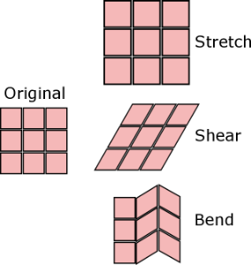

Overview
VCloth 2.0 is the cloth simulation feature of CRYENGINE. Using VCloth, your character’s cloth can be simulated and animated automatically, according to their actual movement. This can make it look much more realistic.
Cloth simulation is generally an expensive process. To reduce performance impact while preserving visual details, CRYENGINE separates the simulation process from the rendering process. A simulation of a lo-res mesh in combination with skinning of a hi-res mesh, which is used for rendering, a fast yet high quality and detailed cloth simulation can be achieved.
Pic1: Separation of render and simulation mesh for cloth simulation
A homogeneous edge flow improves plausibility.
General Considerations for Cloth Simulation in Your Game
In general, cloth simulation is an expensive task. Therefore, you should consider some of the following remarks before designing your character’s cloth to improve run-time performance, visual behavior as well as the controllability of your cloth. In-game simulations, such as cloth, always shift a certain kind of controllability from the animator into the simulation environment, which - in some circumstances - might result in unwanted behavior. So think through the following remarks before designing your character and characters cloth:
- Is cloth simulation really needed in every case?
Often, when we think of cloth, it is a stiff piece of textile and moves directly according to the characters body movement, e.g., a T-Shirt. Normally, these kinds of cloth don't need a full cloth simulation, since plausible movement can be achieved by skinning. - Is your character’s animation kind of weird/unrealistic or does it have a lot of intersections?
If so, a simulation might not be the best way to go. A simulated cloth behaves like it would in reality - if your character moves unrealistically / beams to different places or something similar that would not happen in the 'real' world, the (physical) cloth will probably behave unexpectedly. - What generally works quite well
Cloth which is swinging or strongly moving driven by the character’s animation:- Capes/Mantles
- Skirts
- Jackets
- Soft Attachments, e.g. Pigtails, Hair
- What generally doesn’t work very well
Stiff cloth, barely swinging:- T-Shirts
- Trousers
- Tight-fitting cloth
To improve performance and stability, it might sometimes be beneficial to use a combination of skinning and cloth. E.g., if you need the end of trousers to swing back and forth, you might skin most of the trousers and simulate only the ends. If the simulation area is small, you might even consider using the PRow-Attachments of CRYENGINE or simply a joint attachments with a pendulum simulation, which is shown in the following image:
Pic2: Simulation of the end of torn trousers
In this case, the whole trousers are skinned, only the end is simulated/animated with a few pendulum simulations.
Usage
Cloth Simulation - Principle Forces
To set up your cloth efficiently, a basic knowledge of cloth-simulation principles is crucial. One important concept of cloth in computer graphics is the use of stretch, shear and bend forces. Applying these three forces in combination with different strength, plausible cloth and different kind of textiles can be modeled.
- Stretch forces result in keeping the size of a cloth piece
- Shear forces decrease shearing of cloth
- Bend forces decrease wrinkles and folds and give the cloth a certain stiffness
Pic3: Stretch, shear and bend forces 
Time-stepping
To set up your cloth running at good performance, one more simple concept is important: the time-stepping of simulation. In between 2 rendered frames, there might be several physical sub-steps, propagating the cloth in time. This sub-step size, is set by the parameter Time Step. For example, if your game is running at 20 FPS, each frame needs 1/20 s = 0.05s; with a time step of 0.01s there will be 5 sub-steps per frame.
Additionally, per sub-step you can define the number of Collision Stiffness Iterations - e.g., if you set it to 3 iterations per sub-step, in the above-mentioned example with 20 FPS there will be 3 iterations * 5 sub-steps = 15 iterations per frame.
This is mentioned here, to point out that low values for Collision Stiffness Iterations are crucial, since the number of executions per frame might increase strongly according to your frame rate, increasing the costs for the cloth simulation. On the other hand, the higher the number of Collision Stiffness Iterations, the stiffer your cloth can be - so at the end of the day everything is a trade between performance and elasticity/stiffness.
Pic4: Per frame several sub-steps are executed - whereas each sub-steps contains several collision/stiffness iterations
Related Pages
For more information on how to use VCloth, check the following pages:
How To - Export VCloth from Maya to CRYENGINE
Make sure to load a level, or the VCloth attachment may not render properly.